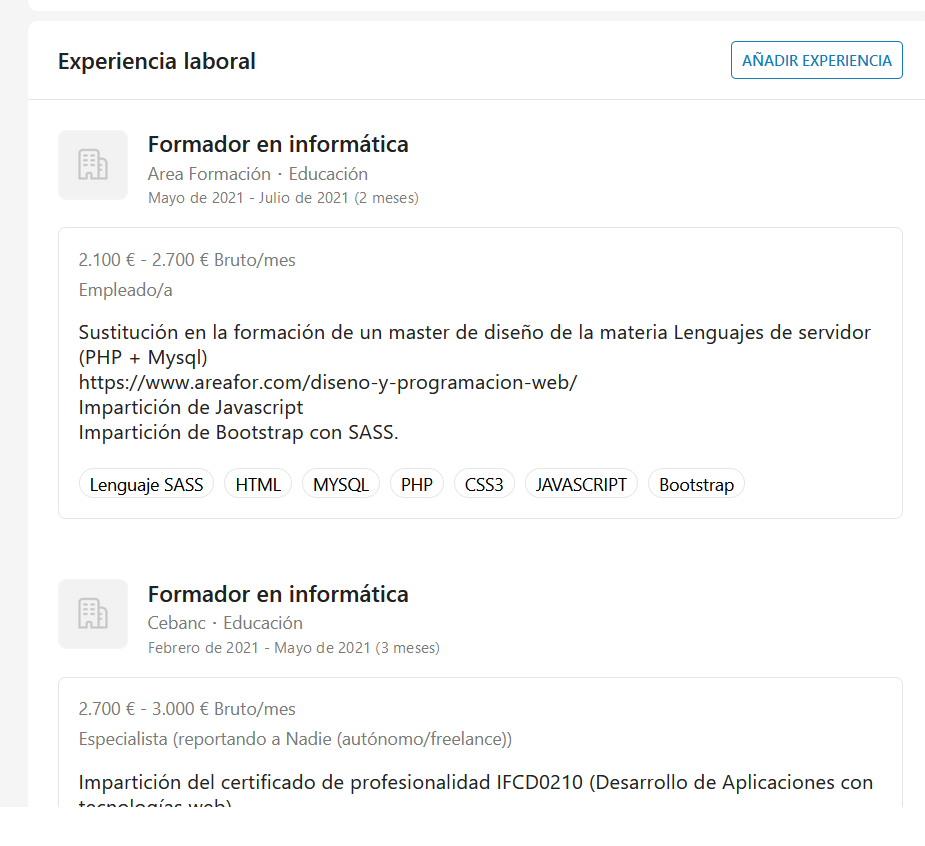
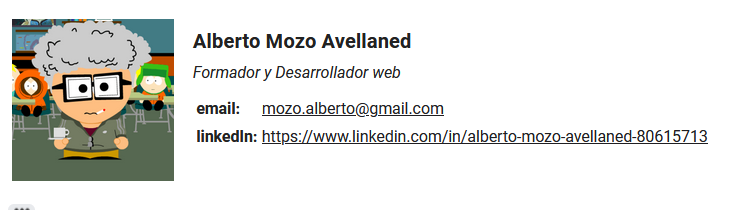

2024 - JSON
2024 - JSON
Partiendo del JSON Manfred las empresas pueden leerlo siguiendo las espeficifaciones del schema
{
"$schema": "https://json-schema.org/draft/2019-09/schema",
"$id": "http://github.com/manfred/mac/schema.json",
"type": "object",
"title": "Manfred Awesomic CV",
"description": "An open CV format",
"properties": {
....
}
Esquema JSON
Este fichero sigue un schema, que permite que cualquier aplicacion con accesos al JSON, pueda extraer la información automaticamente.
Mi CV en JSON
Las empresas pueden buscar palabras claves y los candidatos pueden mostrar la información con el diseño que quiera
 2024 - UI personalizado
2024 - UI personalizado
Partiendo del JSON en el que recopilo mi información, se me ocuurio, simular la aplicacion de whatsApp con su contenido. Me parecio un ejercicio interesante para los cursos de Desarrollo Web
El resultado es la pagina web que enlazo a continuación
Ver Currículum en Web
Esta es un visualización particular del JSON personal. En este repositorio tienes el código, para personalizarlo a tu gusto. Lo puedes usar para demostrar que controlas la manipulación de JSON
2023 - Portal talento
Al descubrir la web de getManfred, y poder importar los datos de Linkedin, añadir datos propios y exportarlos a JSON, me decidí a usar UI distintas para mostrar mi curriculum
Además la aplicación nos facilita también sus propias visualizaciones
Pérfil Manfred (timeline)
Pérfil Manfred (classic)
 2020 - GitHub
2020 - GitHub
Especificamente en el desarrollo informático, una cuenta en github es imprescindible.
Ver Perfil de Github
Github proporciona un alojamiento en un repositorio con el nombre de usuario, que es la pagina de entrada a tu usuario. Por lo tanto el README.md, actual como tarjeta de visita.
En esta plataforma son muy usados los badget para mostrar tus conocimientos
 2015 - Linkedin
2015 - Linkedin
Ante la diversidad de plataformas de empleos, decido usar Linkedin como referencia de mi curriculum.
Ver Perfil de linkedin
La red social de empleo por excelencia, ofrece multitud de opciones para mostrar tus aptitudes. A cada experiencia se le pueden añadir documentos y ofrece test de habilidades.
Muchas empresas del mndo tech, educacional, RRHH, ... realizan busquedas activas sobre el contenido de todos los usuarios de esta red.
Actualmente es la herramienta que más uso y actualizo.
2010 - Servicios públicos de empleo
La automatización de los servicios de empleo, permiten tener otro cv.
Ver CV que envia Lanbide a las empresas
En el caso de Euskadi, este el cv que genera y muestra a las empresas. Los usuarios del sistema pueden añadir experiencias y educaciones, pero si se quieren oficializar se debe aportar documentación paar su confirmación.
2005 - Portales de Empleo
La aparición de los portales de empleo (trabajos.com, infojobs.com,...), abre una nueva via de comunicación, permitiendo una comunicción ,más dinamica.

El problema es que cada aplicación te solicita rellenar el curriculum en su plataforma, y la gestion de actualización se hace muy tediosa.
Personalmente siempre incluyo mi perfil de linkedin he intento indicar que es mi "curriculum ofical"
2000 - Correo Electrónico (PDF)
Los ficheros PDF, se han convertido en un standard de documento en internet. Por lo tanto hay que tener un documento pdf en internet actualizado, para enviar a cualquier empleador.
Ver PDF en red
Muchas empresas solicitan que les envie tu curriculum en un soporte informatico en pdf.
En las busquedas proactivas puedes usar el pdf, como documento adjunto en envios de correos electrónicos
En mi correo electrónico incluyo siempre la siguiente firma, en la que incluyo un enlace a mi perfil de linkedin

Siglo XX - Servicio Postal
Había vida antes de internet. Las ofertas de trabajo se anunciaban en las páginas de empleo de las ediciones dominicales de los periodicos, y la comunicación se realizaba mediante correo postal.
En lugar de enviar correos electrónicos, se enviaban cartas a las empresas. Las empresas se buscaban en las páginas amarillas o en listados que te facilitaban agrupaciones de empresas, como las camaras de Comercio.
Al encontrar una carpeta de cartón con los sobres, sellos, fotos y fotocopias de titulo y certificados, pense en crear esta pequeña web